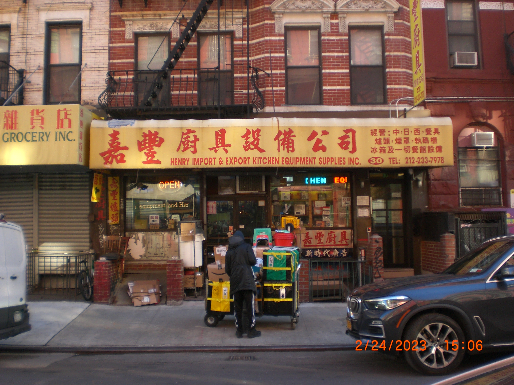
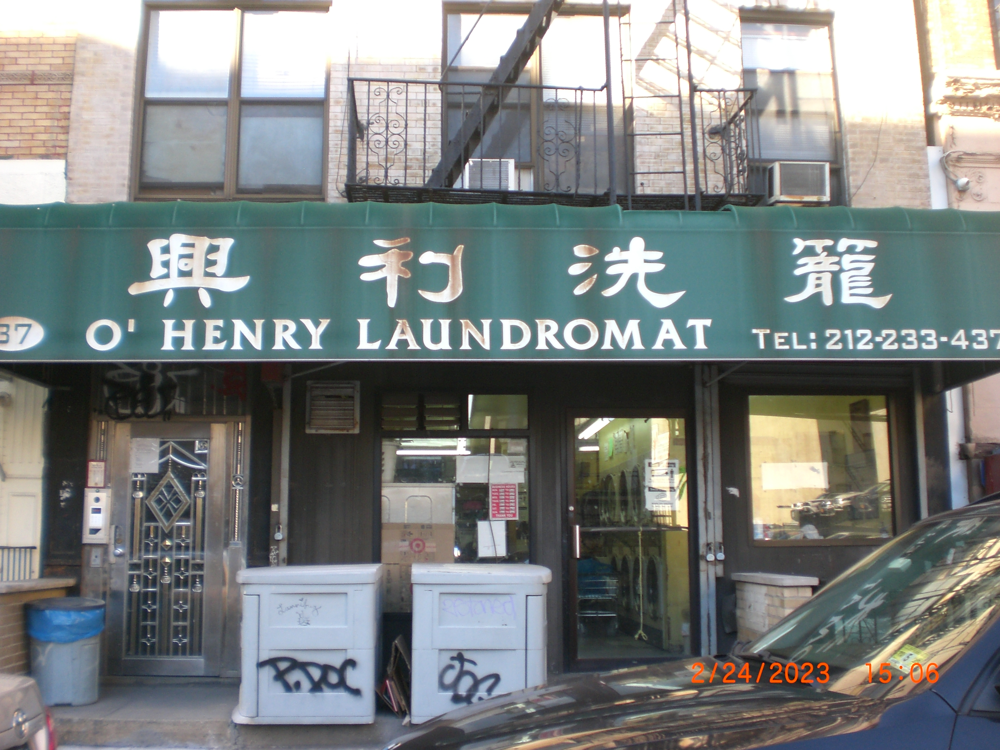
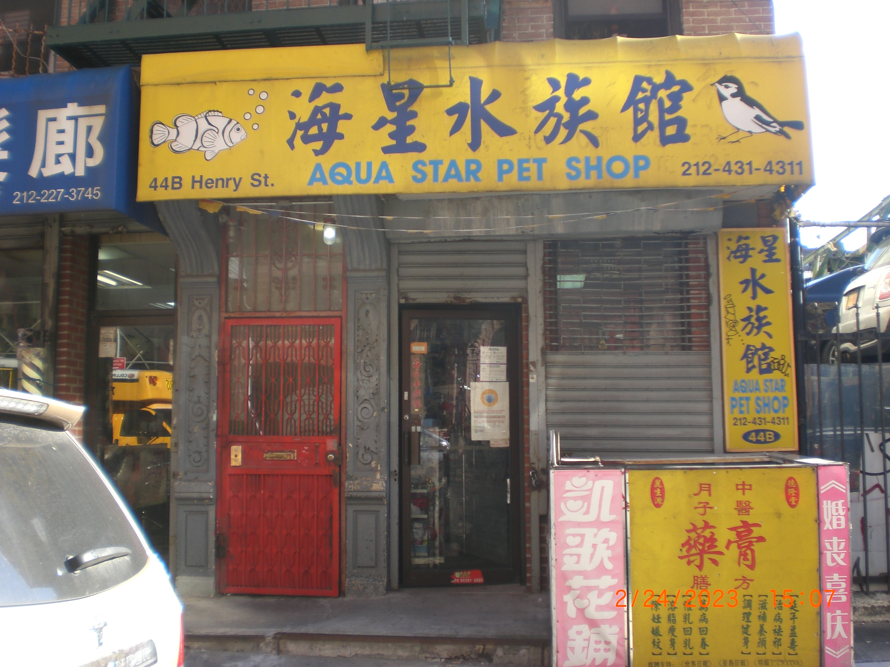
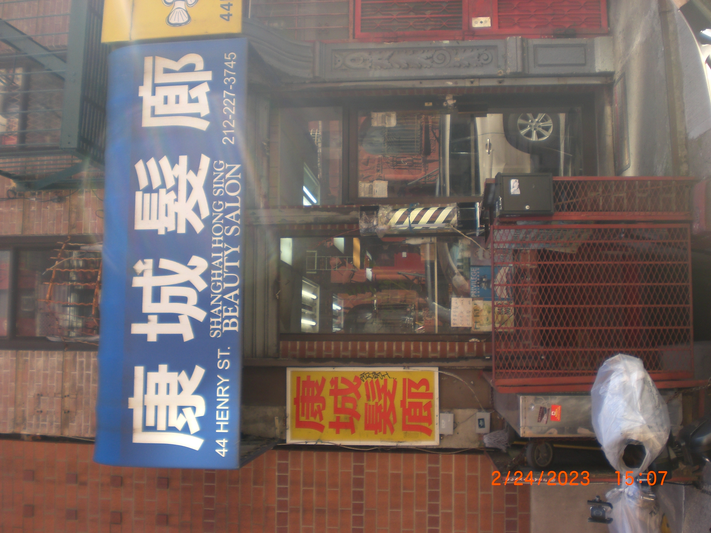

potentially become a guide to chinatwon (manhattan), a more personalized collection of places i’ve been to (restaurants, cafes/bars, bookstores, entertainment/leisure activities–museums, parks & gyms, etc.)
discussion on branding and identity: how each store presents itself and how memorable are they? the visual and graphic design aspect of the storefront, choice of font/color/size/...
if it’s a neighborhood store, what is their goal? (to build a community? what kind of community are they trying to build?)
urban design: the architecture and visual design of storefronts contribute to character and identity of cityscape > used to analyze role of storefronts in shaping urban environment and how they reflect cultural and historical trends
reflection of cultural and historical trends/social and economic context of the time > how cultural and historical trends are reflected in visual design, and how these trends have changed over time
a form of documentary photography – ethical considerations involved in photographing public spaces and private businesses




